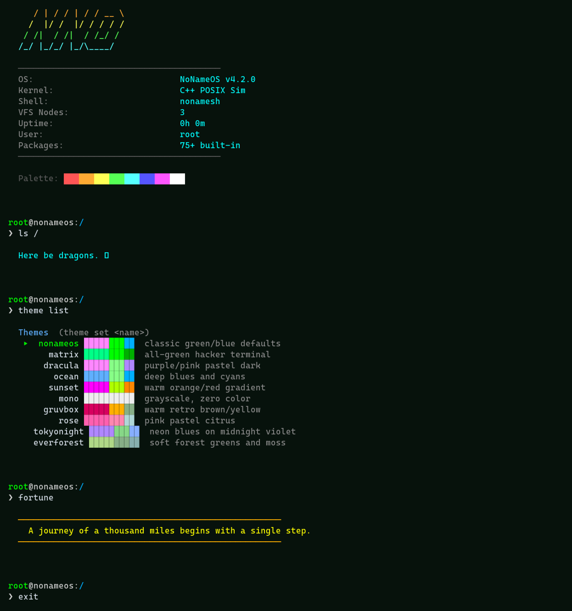

← Mark44928 / projects
Simulation · single-file C++17
NoNameOS
A fake operating system with a real shell, virtual filesystem, persistence, 54 games and enough hidden commands to keep a terminal interesting.
git clone https://github.com/Mark44928/NoNameOS.git
cd NoNameOS && make && ./nonameos
./nonameos --selftest

- One .cppno dependencies or build system maze
- 299 commandsshell, VFS, tools and toys
- 54 gamesfrom snake to chess
- 35 smoke checksplus built-in
--selftest